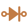
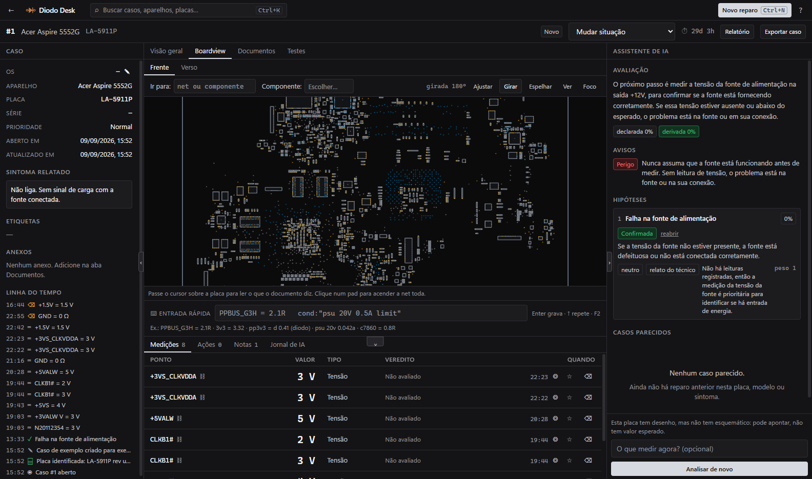

Sua assistência,
organizada do
balcão à entrega.
Cada equipamento tem uma história. Conecte ordens de serviço, orçamentos e visitas técnicas em uma rotina que faz sentido para toda a equipe.
Em preparação para novas assistências.
Notebook · revisão geral
Relato, diagnóstico e histórico juntos.
Próxima etapa: concluir os testes.
Composição ilustrativa · dados fictícios
O serviço anda.
A informação acompanha.
De quem recebe o equipamento a quem faz a entrega. Um caminho claro, com contexto em cada etapa.
- 01
Registrar
Cliente, equipamento e relato juntos na ordem de serviço (OS).
- 02
Conferir
Checklist de entrada e evidências para começar com o contexto certo.
- 03
Acompanhar
Orçamento, aprovação e etapas visíveis para continuar o trabalho.
- 04
Entregar
Serviço concluído. Histórico disponível para o próximo atendimento.
Cada parte da operação.
No mesmo lugar.
Capturas do sistema em funcionamento. Abra cada tela para examinar os detalhes.
O próximo passo
fica à vista.
Localize cada serviço, acompanhe aprovações e mantenha o histórico perto de quem precisa dele.
- Orçamentos e aprovações
- Checklist de entrada e entrega
- Histórico do equipamento

Uma agenda que
acompanha a equipe.
Organize visitas técnicas e compromissos, com o contexto do serviço ao lado do horário.
- Visitas técnicas agendadas
- Compromissos da operação
- Contexto para a equipe

Menos dúvidas.
Mais contexto.
A proposta conecta o andamento do serviço ao acompanhamento do cliente, com a identidade da assistência.
- Status do equipamento
- Orçamentos para aprovação
- Próxima etapa do atendimento

Capturas reais da versão atual, com dados de teste. A versão para novas assistências pode mudar.
Visão da operação
Indicadores para entender o que precisa de atenção.
Registro com contexto
Entrada, evidências e entrega conectadas à OS.
Equipe e cliente
Informação organizada para cada parte do atendimento.
Veja a operação
ganhar movimento.
Um tour pelas telas que conectam gestão, visitas técnicas e acompanhamento do cliente.

A placa tem uma história.
Sua bancada também.
Conheça o futuro módulo de apoio ao reparo em nível de placa. Boardview, medições e histórico técnico, com IA para ajudar a organizar evidências e sugerir o próximo teste.
A IA sugere. O técnico decide.
Entenda o que está a caminho
Histórico por placa
Medições e evidências que permanecem com o caso técnico.
Boardview e esquema
Documentação ao lado das informações coletadas na bancada.
IA com contexto
Apoio ao diagnóstico a partir das evidências disponíveis.
Em desenvolvimento. A integração entre os produtos e a disponibilidade comercial serão detalhadas nas próximas etapas.
Do balcão à bancada,
o mesmo número da OS.
O ReparoHub organiza o atendimento. O Diodo Desk leva o caso para a bancada. O vínculo inicial é o número da ordem de serviço; a integração de dados ainda está em desenvolvimento.
Começa em uma assistência.
É pensado para muitas.
O ReparoHub nasce do trabalho desenvolvido para a operação da GC Tech. A próxima etapa é levar essa experiência para outras assistências técnicas.
Experiência de balcão. Visão de produto.Vamos esclarecer
algumas coisas.
O que já está definido e o que vem pela frente.
Já posso usar na minha assistência?
Estamos preparando o ReparoHub para novas assistências. A abertura de acesso será anunciada quando a versão e as condições de uso estiverem definidas.
Para quem é o ReparoHub?
Para proprietários e equipes de assistências técnicas que precisam registrar e acompanhar o ciclo das ordens de serviço, dos primeiros dados do equipamento à entrega.
O Diodo Desk já faz parte do sistema?
O Diodo Desk está em desenvolvimento como uma ferramenta complementar para a bancada. A ligação inicial é pelo número da OS; a integração de dados e as condições comerciais ainda serão definidas.
Quais são os planos e preços?
A oferta comercial está em definição. Valores, planos e condições de contratação serão apresentados em uma próxima etapa.
O cliente consegue acompanhar o serviço?
A base atual contém uma área de acompanhamento. A disponibilidade e os recursos da versão para novas assistências serão informados na apresentação do produto.
Posso migrar de outro sistema?
O processo de migração ainda será definido. Nesta etapa não há promessa de importação automática de dados de outros sistemas.
Mais clareza na rotina.
Do balcão à bancada.
Estamos preparando o ReparoHub para novas assistências.
Acompanhe aqui os próximos passos do produto.